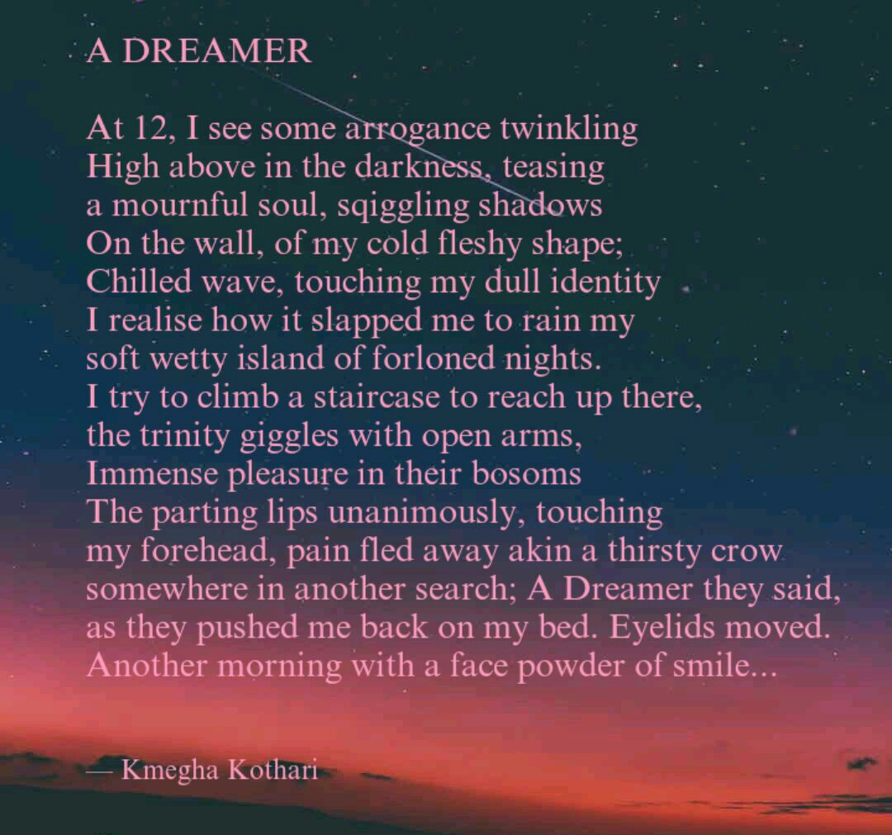
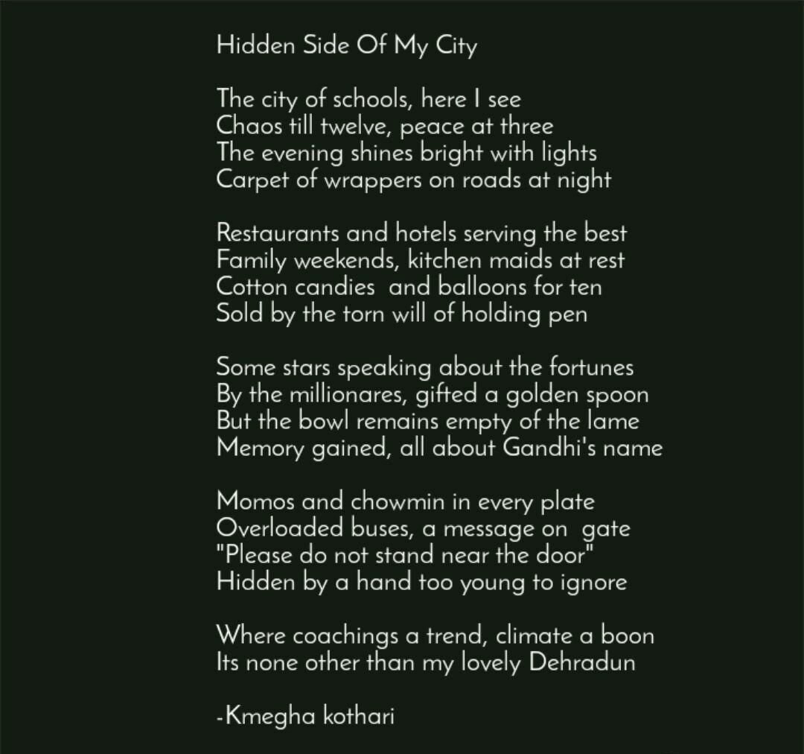
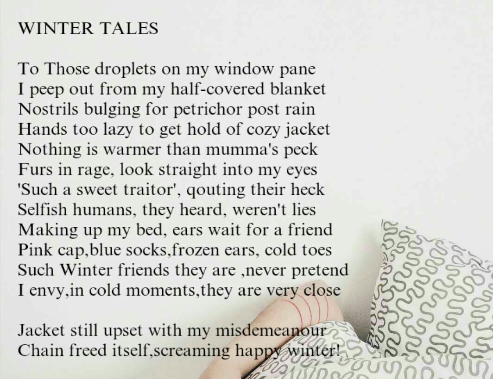

A DREAMER
At 12, I see some arrogance twinkling
High above in the darkness, teasing
a mournful soul,squiggling shadows
On the wall, of my cold fleshy shape;
Chilled wave, touching my dull identity
I realizehow it slapped me to rain my
soft wetty island of forloned nights.
I try to climb a staircase to reach up there,
the trinty giggles with open arms,
Immense pressure in their bosoms
The parting lips unanimously, touching
my forehead, pain fled away akin a thirsty crow
somewhere in another search; A Dreamer they said,
as they pushed me back on my bed. Eyelids moved.
Another morning with a face powedr of smile...

HIDDEN SIDE OF MY CITY
The city of school, here I see
Chaos till twelve, peace at three
The evening shines bright with lights
Carpet of wrappers on roads at night
Restaurants and hotels serving the best
Family weekends, kitchen maids at rest
Cotton candies and balloons for ten
Sold by the torn will of holding pen
Some stars speaking about the fortunes
By the millionares, gifted a golden spoon
But the bowl remains empty of the lame
Memory gained, all about Gandhi's name
Momos and chawmin in every plate
Overloaded buses, a message on gate
"Please do not stand near the door"
Hidden by a hand too young to ignore
Where coaching a trend, climate a boon
Its none other than my lovely Dehradun..

WINTER TALES
To Those droplets on my window pane
I peep out from my half-covered blaket
Nostrils bulging for petrichor post rain
Hands too lazy to get hold of cozy jacket
Nothing is warmer than my mumma's peck
Furs in rage, look straight into my eyes
'Such a sweet traitor', quoting their heck
Selfish humans, they heard, weren't lies
Making up my bed, ears wait for a friend
Pink cap, blue socks, frozen ears, cold toes
Such Winter friends they are, never pretend
I envy, in cold moments, they are very close
Jacket still upset with my misdemeanoour
Chain freed itself, screaming happy winter!
GOODBYE TO COURAGE
Goodbye to courage is in Vogue
Truths locked in the darkest souls
Sweet lies, at best, veiling the rogues
Cowardice, walking with a stick of trolls
Shredding leaves of alluring beauty
Shout aloud for the Spring again
Isn't admiring one's wrinkles, a duty?
Lost courage, in botiques of many lanes
Stamming lies, twisted tongues
Innocence being lost in vaccum
Lips puffing away, shrinking lungs
Adolecense choking in washrooms
In this dominating digital world
Screens protesting for the burns
Words wrapped in anger hurled
Faces hidden and backs turned
Feelings hiring the mediators
To clear off the dues of past
Insolvency of lovers and haters
In the ocean of words, so vast
I am right!' echoes every second
Courage lost to accept denial
Ego demanding infalliable patent
Excuses be the mud of follies' burial
Count the breaths, count the beats
Why isn't your head held high?
Before the inevitable sleep, I repeat
Let not the courage, bid you Goodbye!
CONTEMPLATION
Holding a needle in my hands
I try to sew my dreams and plans
Contrary to the plans, I find myself
entangled in the kaledioscopic threads
Threads of affection, deceit and regrets
Few years later, criticizing my stars,
Needle and the thread to stitch my scars
Drenched in a hope of soon being fine
Torn dreams of mine, standing in a line
Finally the old traitors of my lane
Preach me how to stitch my pain.
In the same biting shoe though
Hardly had they put their toe
Too tough to perform manually
I bought some stitching machines
Councellors they were called skillfully
Guiding me to use some safety pins
My scars needed to be stitched
My dreams needed to be sewed
Cause in future, pins might ditch
And my life could be screwed
I drenched myself into hte ink of red
To carve some odes, elegy and sonnets
Sewed my dreams with passion's thread
My joy Wearing the applaud's bonnet...